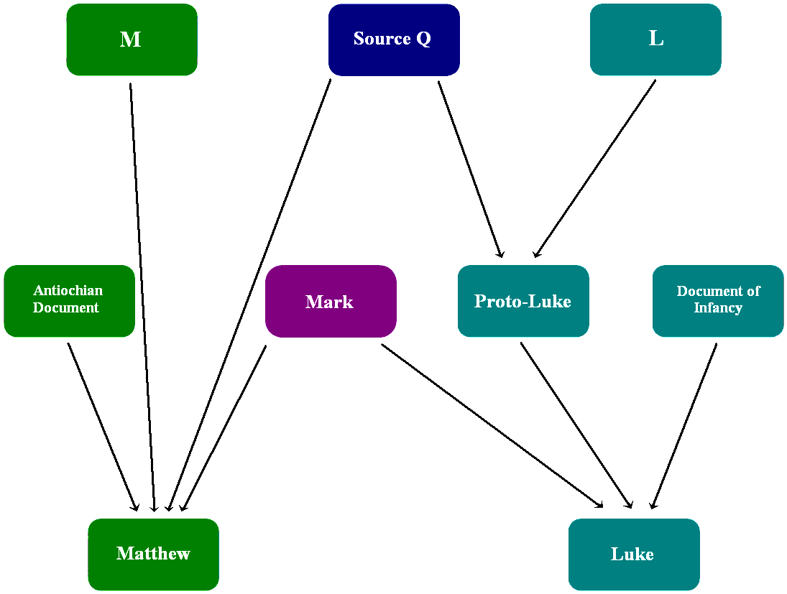
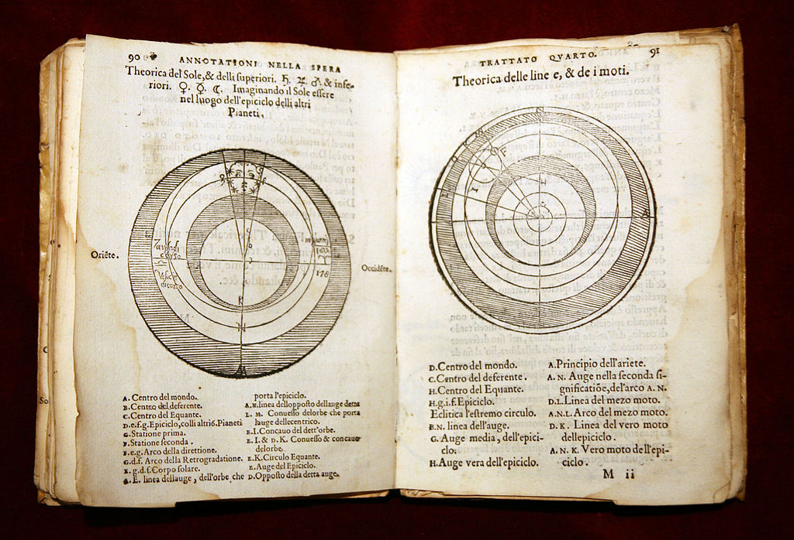
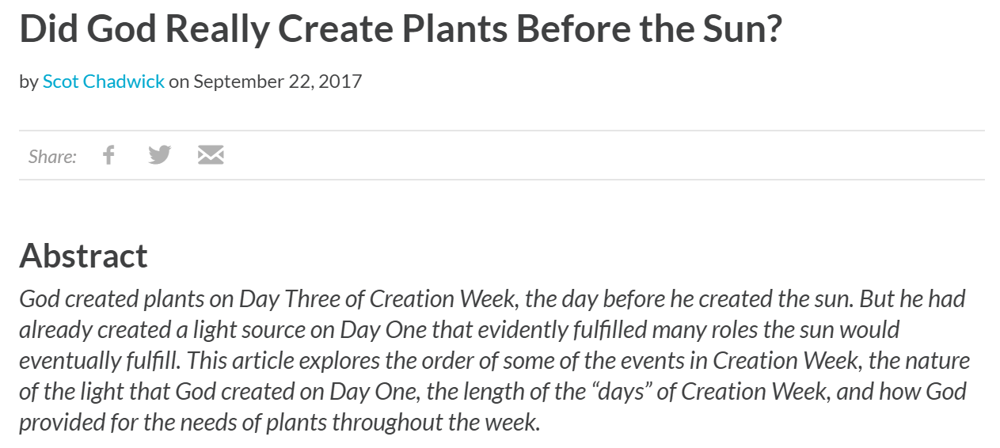
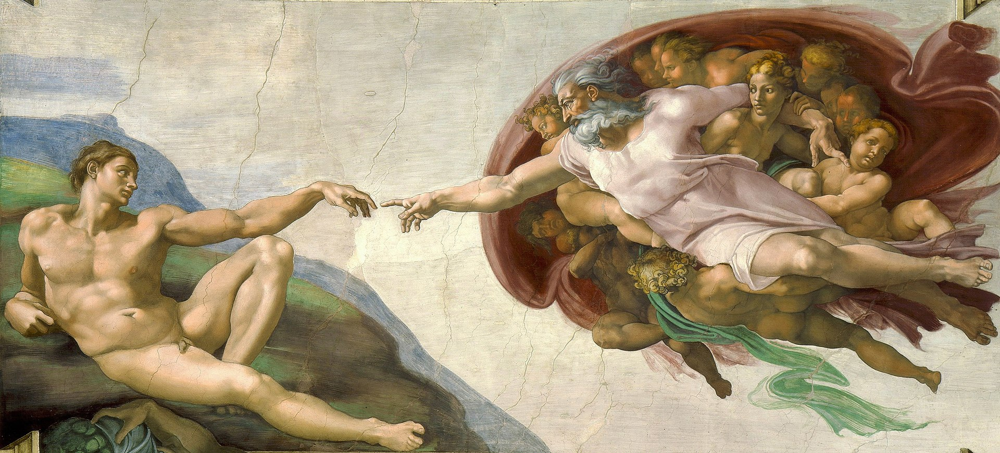

왜 성경에서는 인간이 하나님의 형상대로 만들어졌다고 했을까?
게시: 2019-11-07T06:30:29+09:00
저는 제가 나름대로 확고한 믿음을 가지고 예수님의 가르침을 따르는 성도라고 생각합니다. 그러나 저 자신이 아무 의심을 갖지 않고 목사님 말씀 잘 따르는 성도라고는 자신있게 주장하지는 않습니다. 기본적으로 저는 '교회 밖에도 구원이 있을 수 있다' 라고 믿기 때문입니다. 최근에 새로 옮긴 교회에서 '새신자 교육'이라는 것을 받고 있는데, 수업 중에 목사님에게 다음과 같은 질문을 했습니다. "제 주변에 어떤 독실한 신자분이 계신데, 그 분 말씀에 따르면 요한복음 14장 6절에 이르기를 '나로 말미암지 않고는 아버지께로 올 자가 없느니라', 즉 예수님을 거치지 않고서는 구원받을 수 없다고 되어 있으므로, 갓난 아이나 천진한 어린이라고 할 지라도 예수님을 알고 영접하기 전에 죽는다면 죽어서 지옥으로 간다고 주장하십니다. 정말 그런가요?" 저는 사실 그 교리상의 답을 대략 알고 있었습니다. 답은 Yes, 지옥에 간다는 것입니다. 저는 원래 예수님께서 어린 아이는 천국에 간다라고 말씀하셨다고 알고 있었는데, 그런 말씀을 해준 분이 지적하기를 마태복음 18장 3절을 다시 제대로 읽어보라고 하시더라고요. "너희가 돌이켜 어린아이처럼 되지 않으면, 하늘 나라에 들어갈 수 없다." 즉, 어린 아이처럼 되어야 한다는 것이지 어린 아이가 천국에 간다는 말은 아니라는 것이지요. 충격적이긴 하지만 그게 신학적인 정답은 맞는 것 같았습니다. 아무 죄도 없는 아기들이 지옥에 가야 한다는 것은 비신자들로서는 매우 황당한 이야기이겠지만, 기독교적인 관념으로 보면 모든 인간은 애초에 원죄를 타고 났기 때문에 어쩔 수가 없습니다. 그런데, 이 목사님, 정확하게는 열 분 정도 계신 부목사님 중에서 가장 막내이신 그 목사님 답변은 제 예상을 좀 빗나갔습니다. "신학적으로는 그 말씀이 맞습니다. 고신이나 예장합동 같은 보수파 교회에서는 그렇게 말합니다. 그러나 저는 그렇게 생각하지 않습니다. 하나님께서는 우리 인간을 사랑하십니다. 그런 분께서 원죄를 가졌다고 해도 아직 본인이 죄도 짓지 않은 어린 아이들을 지옥으로 보내셨을 거라고는 믿지 않습니다. 그 대답은 신학적으로는 맞을지 몰라도 하나님께서는 기뻐하지 않으실 대답입니다." 이 말씀은 어떻게 보면 보수적인 교단에서는 이단심판이라도 해야 하는 발언입니다. 예수님을 거치지 않고도 구원을 받을 길이 있다는 뜻으로 받아들일 수 있기 때문입니다. 하긴 예전에는 성경의 문장 하나를 어떻게 해석하느냐에 따라 니가 이단이네 내가 정통이네 하며 많이들 서로 죽이고 죽였지요. 제게 '아기일 때 죽으면 모두 지옥 간다'라고 말씀하신 분은 결코 이단이 아니고 매우 독실한 개신교 신자이신데, 이 분이 제게 해주신 충격적인 말씀이 또 있습니다. 그 분 말씀에 따르면 성경은 인간이 편찬한 것이 아니라는 것이었습니다. 그게 누가 되었든 성경을 쓸 때는 그 사람이 쓴 것이 아니라 그 사람의 손에 하나님의 성령이 임하여 한글자 한글자 모두 하나님의 뜻 그대로 쓰인 것이므로 오탈자는 물론 단 한글자도 의미가 없거나 잘못된 것이 없으며 글자 하나하나를 그대로 다 믿어야 한다는 말씀이었지요. 저는 다소 어이가 없어서 '번역할 때는 그래도 좀 변형이 되지 않았을까요?' 라고 물었는데 그 분은 단호하게 '모든 번역이 이루어질 때도 다 하나님의 성령이 임하셨습니다' 라고 말씀하시더군요.

저는 그렇게 믿지 않습니다. 저는 원래 성경은 M source니 Q source니 하는 문헌들에서 신학자들이 나름대로의 기준으로 가지고 고르고 골라서 편찬한 것이고, 그 원전들도 고대 유대교 성직자들이 나름대로의 기준으로 쓴 것이므로 당연히 당시의 사회 및 정치 환경, 그리고 작성자와 편찬자 개인들의 믿음과 이해 관계가 일부 섞여 있을 거라고 생각했고, 지금도 그렇게 생각합니다. 가령 디도서 2장 5절에 '아내는 남편에게 복종하라'는 말이나 로마서 13장 1~2절에 '모든 세속 권세는 하나님이 세우신 것이니 권세에 저항하지 말고 복종하라'고 쓰인 것이 다 그렇다고 봅니다. 돼지고기를 먹지 말라, 피를 먹지 말라, 동성애를 하지 말라는 것도 다 같은 맥락에서 저는 봅니다. 그런데 그런 해석 없이 다 하나님이 직접 불러주신 것이므로 시대와 사회에 상관없이 무조건 글자 그대로 따라야 한다고 하면 많은 문제가 생깁니다. 가령 돼지고기와 돼지피로 소시지나 순대를 만들어먹는 자들은 모두 그 자손까지 멸망당하는 저주를 받습니다. 그런 것에 대해 기독교인들은 신약 사도행전 10장에서 베드로가 본 환상 장면을 인용하며 '이제는 먹어도 된다'라고 정당화합니다. 하지만 그것도 엄밀히 보면 '이방인에게도 포교하라'는 명령의 암시일 뿐, 직접 그런 부정한 음식을 먹어도 된다는 말은 아닙니다. 그 외에도 신약에서 명시적으로 풀어주지 않은 말도 안되는 계율도 많습니다. 가령 레위기 21장에 몸에 장애가 있는 사람은 하나님 앞에 나와서는 안된다고 되어 있습니다. 신명기 22장에는 만약 아내가 알고보니 처녀가 아니라면 돌로 쳐죽이라고 되어 있습니다. 더 웃긴 것은 신명기 22장에 약혼하지 않은 여자를 성폭행한 남자는 그 벌로 그 여자의 아버지에게 은 50세겔을 주고 그 여자와 결혼하라는 계율이 있다는 것입니다. 제가 아는 하나님은 이렇게 장애인을 차별하거나 여성을 비하하는 분이 아닙니다. 이것들은 그저 당시 유대 사회의 남성 위주의 가부장적인 측면을 반영하는 구절일 뿐, 하나님의 정의나 사랑과는 전혀 상관없는 계율입니다. 성경을 문자 하나하나 그대로 다 진실이라고 믿으려는 마음은 이해가 갑니다. 하나님이 인간을 사랑하신다는 징표 중에 거의 유일하게 손에 잡히는 증거물이니까요. 그러나 성경을 읽어보신 분들이라면 누구나 '아무래도 이 부분은 좀 이상하다'라는 부분들이 있었을 것입니다. 첫부분부터 이상합니다. 하나님께서는 셋째 날 '풀과 씨를 맺는 식물과 씨가 든 열매를 맺는 과일나무'를 만드십니다. 그런데 태양과 달은 넷째 날 만드십니다. 이건 지구가 우주의 중심이고 태양과 달은 지구 주변을 돈다는 믿음이 있던 시절에나 통하는 이야기이지 현대적인 상식을 아는 사람들에게는 통하는 이야기가 아닙니다. 또 열왕기 하 20장에서 징표를 바라는 히스기야를 위해 태양을 10도 뒤로 물리는 부분도 지동설 세계에서는 있을 수 없는 일입니다. 그런 이유 때문에라도 중세 교회에서는 지동설을 주장하는 학자들을 종교 재판에 회부하며 탄압했던 것입니다.

(천동설을 Ptolemaic System이라고 하지요. 그걸 보여주는 1550년 경의 인쇄물입니다.)

(하나님께서 세쨋 날 식물을 만드시고 넷째 날에서야 태양과 달을 만드신 것을 어찌 설명할 것인지에 대해서는 이런 설명이 있더군요. 궁금하신 분은 https://answersingenesis.org/days-of-creation/did-god-really-create-plants-before-sun/ 에 들어가서 읽어보세요. 저는 읽어보았는데 받은 느낌은 억지로 꿰어 맞추려 노력하다보면 이런 글도 나오는구나 싶었습니다.)
그래도 요즘은 광신자들의 시대가 아니니 그렇게 성경 구절 때문에 멀쩡한 사람들을 탄압하는 일은 없지 않냐고요 ? 지금도 있습니다. 바로 동성애를 비롯한 성소수자들입니다. 교회는 성경에서 분명히 금지했으니 시대가 변했다고 동성애자들을 용납할 수는 없다고 주장합니다. 그러나 똑같은 교회에서 희한하게도 처녀가 아닌 미혼 여성이나 불륜을 저지른 기혼자들에 대해서는 (성경에 따르면 동성애와 동일하게 처벌해야 하는데도) 별 말이 없습니다. 제 생각입니다만, 이는 동성애자들이 소수의 외부인이기 때문입니다. 교회는 내부 결속을 위해서 외부의 만만한 소수를 골라 증오의 대상으로 삼는 것입니다. 이건 결코 예수님께서 가르치는 사랑이 아닙니다. 예수님께서는 당대 사람들이 손가락질하며 욕하던 창녀들과 세리들을 가까이 하시고 당시 유대인들이 적대시하던 사마리아인을 예로 들며 칭찬하셨습니다. 예수님께서는 사랑을 가르치셨지 증오를 조장하지 않으셨습니다. 예수님께서 유일하게 욕하시고 때린 대상은 엄숙한 척 잘난 척 하던 당대의 종교 지도자들과 종교를 이용해서 돈을 벌던 사람들이었습니다. 태양이 지구를 도는 것이 아니라 지구가 태양을 돈다는 것은 인공위성에서 찍어준 사진으로 이제 믿지 않는 사람들이 거의 없습니다. (The Flat Earth Society 회원들 빼고요...) 하지만 여전히 성경에 쓰여있다는 이유로 과학을 부정하고 심지어 학교에서 가르쳐서는 안된다고 주장하는 이론이 있지요. 바로 진화론입니다. 진화론은 매우 잘못된 이론일 뿐 인간은 원숭이 따위에게서 나온 것이 아니며 반드시 흙을 재료로 해서 '하나님의 모습과 형상대로' 만들어진 것 (하나님께서는 '우리의 모습과 형상대로'라며 단수가 아니라 복수로 지칭하셨다는 점도 이상한데 그건 천사들의 존재를 가리키는 거라고 설명하더군요) 이라고 주장하는 분들이 많습니다.

저는 진화론이 하나님이 우주를 창조하셨다는 것을 부정하는 이론이라고는 생각하지 않습니다. 저는 원래 그 까마득한 옛날, 무식한 유목민들에게 DNA가 어쩌고 유성 생식이 어쩌고 돌연변이가 어쩌고 하는 것을 이해시키기가 어려우니까 그냥 외우기 쉽게 '흙으로 빚어서 코로 숨을 불어넣어 남자를 만드셨다'라고 가르쳤다고 믿었습니다. 그런데 진화론을 부정하시는 분들의 이야기를 들어보면 그 말씀들에도 일리가 있습니다. 인간은 원숭이나 물고기와 같은 그저 수많은 동물 중에 하나에 불과한 존재가 아니라 하나님의 형상을 따라 창조된 소중한 생명이기 때문에 진화론 같은 것은 받아들일 수가 없다는 것입니다. 그 말씀을 들으니 그건 맞는 말이라고 생각합니다. 진화론에 따르면, 아니 그냥 우리가 눈으로 자연을 보면 모든 동물은 약한 것은 먹히고 강한 것은 먹는 살벌한 세상에 살고 있습니다. 그러나 인간은 짐승이 아니며, 인간은 사랑을 받아야 하는 소중한 존재입니다. 굳이 성경에서 인간은 하나님의 형상대로 만들어진 소중한 존재라고 가르친 것도 그런 이유에서라고 믿습니다. 예수님께서도 요한복음 13장에서 이렇게 말씀하셨습니다. "내가 너희에게 새 계명을 준다. 서로 사랑하여라. 내가 너희를 사랑한 것같이 너희도 서로 사랑하여라." 잘났던 못났건 모든 인간은 서로 다른 점보다는 닮은 점이 많습니다. 아무리 남들보다 재주가 떨어지는 사람이라고 해도 모든 인간은 소중하며, 우리는 서로를 사랑해야 합니다. 그것이 성경의 가르침입니다. 저는 하나님께서 동성애자들을 미워하고 사회주의를 막으라고 성경을 내려보내셨다고는 믿지 않습니다. 심지어 성경에는 사회주의라는 말이 나오지도 않고, 오히려 공산당처럼 부자들은 천국에 갈 수 없으며 부자들은 가진 것을 팔아 가난한 자들에게 모두 나누어주어야 한다고 가르칩니다. 최근에 모정당에서 영입한 분이 "65살이 돼 기초연금을 받게 된다면 인생을 잘 못 사신 것"이라는 말씀을 과거에 하셔서 구설수에 올랐더군요. 아마 성경에서 사람을 하나님의 형상대로 만들어진 존재로 묘사한 것은 과학을 부정하라고 그런 것이 아니라, 아무리 가진 것 없더라도 인간을 멸시하지 말라는 뜻에서 적은 것이 아닐까 합니다. PS. 교회 밖에도 구원이 있을 수 있는가에 대해서는 카톨릭은 꽤 긍정적으로 생각하는 것으로 알고 있습니다. 1960년대에 있었던 제2차 바티칸 공의회(The Second Ecumenical Council of the Vatican)에서도 다음과 같이 공표하여, 카톨릭이 아닌 개신교인은 물론 무슬림 및 유대교인, 심지어 아무 믿음이 없지만 선하게 살기 위해 노력하는 사람들에게도 구원의 가능성이 있음을 분명히 했습니다. http://maria.catholic.or.kr/dictionary/doctrine/doctrine_view.asp?menu=concil&kid=2&seq=2508&level1=3&level2=0&level3=2&level4=0&level5=0&level6=8&level7=&lang=ko&keyword=%EA%B5%90%ED%9A%8C%EB%B0%96%EC%9D%98 16. 교회와 비그리스도인 ...그러나 구원 계획은 창조주를 알아 모시는 사람들을 다 포함하며, 그 가운데에는 특히 무슬림도 있다. 그들은 아브라함의 신앙을 간직하고 있다고 고백하며, 마지막 날에 사람들을 심판하실 자비로우시고 유일하신 하느님을 우리와 함께 흠숭하고 있다. 어둠과 그림자 속에서 미지의 신을 찾고 있는 저 사람들에게서도 하느님께서는 결코 멀리 계시지 않으신다.... 사실, 자기 탓 없이 그리스도의 복음과 그분의 교회를 모르지만 진실한 마음으로 하느님을 찾고 양심의 명령을 통하여 알게 된 하느님의 뜻을 은총의 영향 아래에서 실천하려고 노력하는 사람은 영원한 구원을 얻을 수 있다.....또한 하느님의 섭리는 자기 탓 없이 아직 하느님을 분명하게 알지 못하지만 하느님의 은총으로 바른 생활을 하려고 노력하는 사람들에게는 구원에 필요한 도움을 거절하지 않으신다....